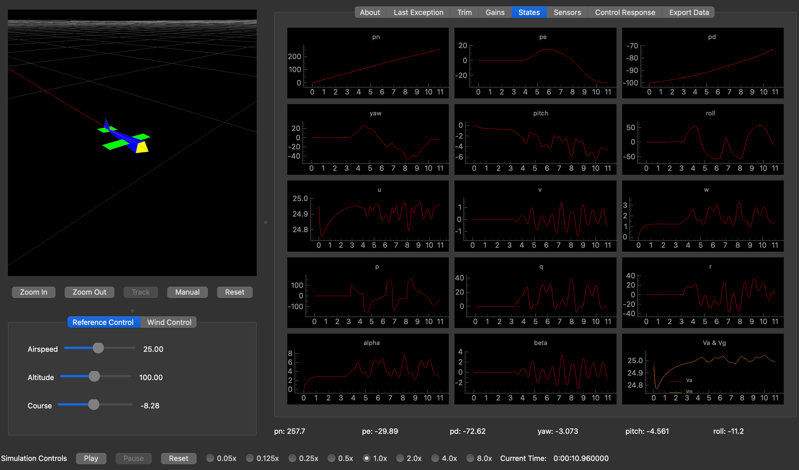
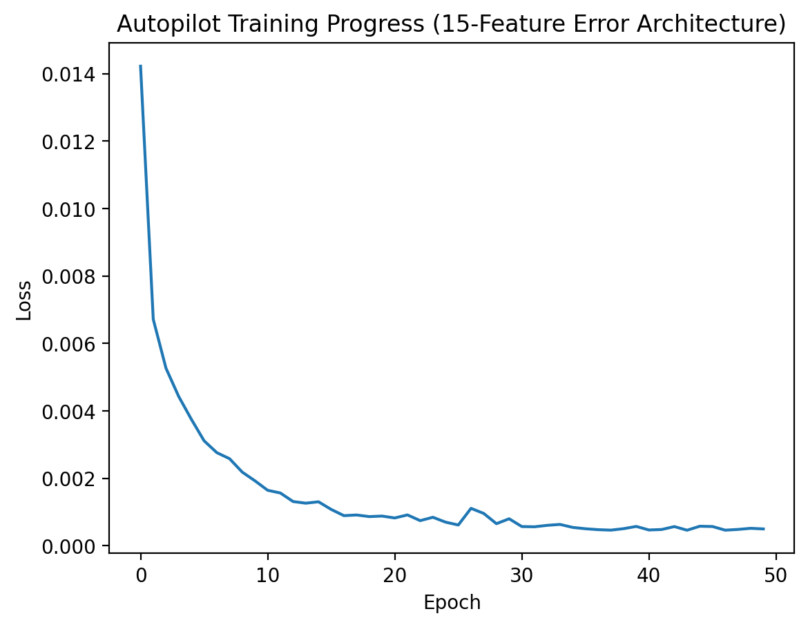
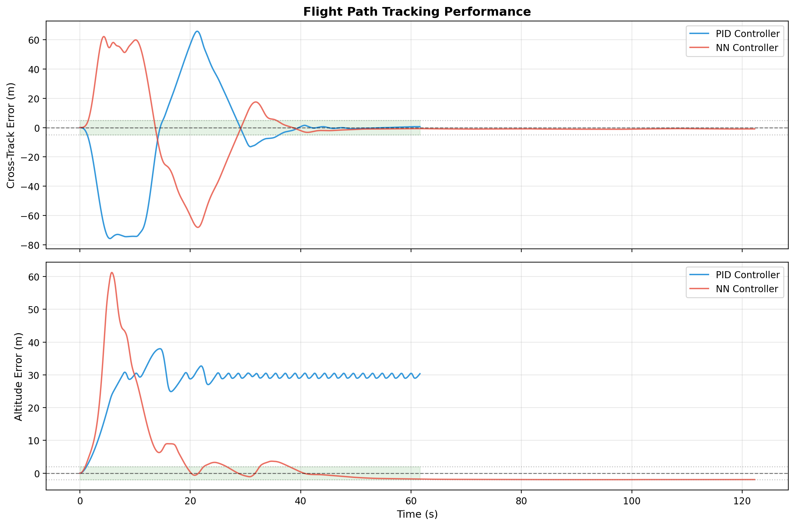

Small-Scale UAV with a Recurrent Neural Network
Behavioral cloning of a classical fixed-wing autopilot into a single LSTM-based flight controller
Project Overview
This ECE 263/210 project explored whether a recurrent neural network could replace the classical successive loop-closure autopilot used for a small fixed-wing UAV. Instead of maintaining separate PID loops for course, altitude, roll, and pitch, we trained a single Long Short-Term Memory (LSTM) model to infer throttle, aileron, elevator, and rudder commands directly from flight-state history.
The controller was trained with behavioral cloning: expert trajectories were generated by the baseline PID autopilot in simulation, recorded into a dataset, normalized, and used to supervise the neural controller offline before reintegrating it into the flight stack for closed-loop evaluation.
Project At a Glance
Core Objective
- Replace a classical PID-based fixed-wing autopilot with a single learned controller
- Improve path-following performance in nominal conditions
- Evaluate where imitation learning succeeds and where it breaks down
Technical Stack
- PyTorch LSTM architecture
- Behavioral cloning from expert PID trajectories
- Feature-engineered flight-state inputs with normalization
Key Outcomes
- 49.8% reduction in cross-track MAE versus PID
- 82.5% reduction in altitude MAE in nominal testing
- Clear evidence of over-specialization under reversed wind conditions
Guidance and Control Strategy
The baseline autopilot followed straight-line paths using cross-track error and commanded course logic rather than simple waypoint chasing. That geometric framing mattered for the neural controller as well: instead of asking the network to infer path structure from raw GPS coordinates alone, we exposed physically meaningful features such as heading error, normalized cross-track error, aerodynamic angles, and body rates.
This produced a controller that learned the relationship between displacement from the desired line and the exact control surface deflections needed to recover smoothly. The recurrent architecture also helped the model retain short-term flight context, which is critical when the aircraft must react to momentum, turn transitions, and persistent disturbances like crosswind.
Neural Network Architecture

Model Inputs and Outputs
- 15 input features: reference commands plus aircraft attitude, rates, velocities, and inertial position states
- Temporal memory: LSTM cells preserve short-term state history better than a feedforward network
- Bounded controls: Tanh output bounding keeps commands within realistic flight-control limits
- 4 outputs: throttle, aileron, elevator, and rudder
Training used mean squared error against PID teacher labels, with an 80/20 train-validation split. Input normalization was necessary because the state vector mixes angles, rates, positions, and velocities with very different scales.
Training Pipeline
The project followed a modular lifecycle: generate expert data from the classical controller, train the network offline, deploy the model into the simulator through an interface bridge, and collect new flight traces for later refinement. This kept the system easy to debug while preserving a clean separation between data generation, model training, and live inference.
That workflow made it possible to compare controller behavior directly in closed loop while still using the expert PID as a reliable teacher during early development.
Performance Evaluation
Evaluation was split into offline learning validation and closed-loop flight testing. First, we confirmed that the network converged toward the PID teacher on the training set. Then we compared the learned controller against the original autopilot on straight-line tracking and altitude regulation in the simulator.

Training Validation
The loss curve showed stable convergence across training epochs, indicating that the LSTM successfully learned a smooth mapping from flight state to control action.

Closed-Loop Flight Comparison
In nominal conditions, the learned controller produced similar settling behavior while reducing both lateral tracking error and altitude error relative to the baseline PID controller.
Measured Improvements
- Cross-track MAE: 21.12 m to 10.59 m
- Cross-track RMS: 33.93 m to 21.61 m
- Altitude MAE: 27.95 m to 4.88 m
- Time within ±5 m corridor: 46.84% to 73.44%
Wind Robustness and Failure Mode
The most useful result was not just where the network won, but where it failed. After training on a fixed left-wind scenario, the controller was evaluated under a reversed right-wind disturbance. Early in training the model remained somewhat stable, but as the number of epochs increased it became increasingly specialized to the original environment and eventually diverged badly.
1 Epoch
- Cross-track MAE: 24.271 m
- Altitude MAE: 22.229 m
- Still imperfect, but recoverable
20 Epochs
- Cross-track MAE: 78.696 m
- Time in tolerance: 11.2%
- Model starts committing to the wrong correction strategy
225 Epochs
- Cross-track MAE: 417.691 m
- Cross-track RMS: 493.060 m
- Overfit behavior leads to collapse under unseen conditions
This result made the project more credible: imitation learning was strong enough to outperform PID in-distribution, but not robust enough to generalize to shifted wind conditions without broader training data or a stronger reinforcement-learning style objective.
Takeaways
- Feature engineering mattered as much as network selection; the model benefited from geometric path-following signals rather than raw positions alone.
- LSTM memory was effective for short-horizon flight dynamics and smooth command generation.
- Behavioral cloning can exceed the teacher in nominal conditions, but it can also inherit brittle environmental assumptions.
- Future work should expand the disturbance envelope of the dataset and explore reinforcement learning or domain randomization for robustness.